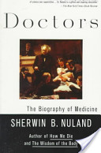

books.google.com - How does medical science advance? Popular historians would have us believe that a few heroic individuals, possessing superhuman talents, lead an unselfish quest to better the human condition. But as renowned Yale surgeon and medical historian Sherwin B. Nuland shows in this brilliant collection of linked...http://books.google.com/books/about/Doctors.html?id=22hNffrgFCkC&utm_source=gb-gplus-shareDoctors
Page
The Biography of Medicine Sherwin B. Nuland. “This is a hook that 09 s the nm-
iashioned wayiby chronicling we pro'; \immph oi science ovei SUDBYSUHUVI .
Dr. Nuland IS a gifted and msumng s niytellei." i The New Yarli Times Bank ...
Page i
Sherwin B. Nu/am/ Doctors Sherwin B. Nuland, MD'v is the author of How We Die
: Reflections on Life's Final Chapter, which won the National Book Award in 1994
, and How We Live. He is clinical professor of surgery at Yale, where he also ...
Page ii
BOOKS BY SHERWIN B. NULAND Lost in America How We Live (originally
published as The Wisdom of the Body) How We Die: Reflections on Life's Final
Chapter The Face of Mercy Medicine: The Art of Healing Doctors: The Biography
of ...
Page iv
... reprinted by permission of the publisher, Gryphon Editions, Ltd., 3100
Independence Drive, Birmingham, Alabama 3 5209. Library of Congress
Cataloging-in-Publication Data Nuland, Sherwin B. Doctors: the biography of
medicine. Reprint.
Page xiii
The Biography of Medicine Sherwin B. Nuland. 32nd Annual Samuel C. Harvey
Lecture in the History of Surgery, at Yale, in 1987. I have made two new friends
during the several years of this book's gestation: Robert Gottlieb bad faith in the ...
Page xviii
The Biography of Medicine Sherwin B. Nuland. be appreciated that organs
sicken because the microscopic cells within them sicken. Having identified the
minute locus in which disease originates, doctors next turned their attention to
finding ...
Page xix
The Biography of Medicine Sherwin B. Nuland. combination and permutation of
antecedents and their time relations. In this sense, every disease consists of
multiple diseases; in this sense, too, there are no diseases but only sick people.
Page 4
The Biography of Medicine Sherwin B. Nuland. meaningful of all may be the
question of their collective impact upon the thinking of contemporary man. It is
much the same with Hippocrates, the Greek physician whom we call the Father of
...
Page 6
The Biography of Medicine Sherwin B. Nuland. An eighteenth-century French
engraving presents Hippocrates as he has traditionally been portrayed through
the ages. Though based on scant evidence, this is the universally accepted
image.
Page 10
The Biography of Medicine Sherwin B. Nuland. of dissimilar clinical conditions
under one fused, and therefore canfused, heading, a state of affairs that arose out
of their propensity to categorize a disease on the basis of its major symptom, ...
Page 12
The Biography of Medicine Sherwin B. Nuland. entire collection of ancient
medicine, perhaps of all medicine, or, as the Greeks were fond of calling it, the Art
: Life is short, the Art is long, opportunity fleeting, experience delusive, judgment ...
Page 14
The Biography of Medicine Sherwin B. Nuland. jaundice, and fevers of various
sorts are frequent in the Hippocratic descriptions of disease, and each of them
could be related to one or more of the humors and the season in which it ...
Page 20
The Biography of Medicine Sherwin B. Nuland. health and in the treatment of
disease, the ancient antagonists are proving to be mutually supportive. More and
more, there is less and less to fight about. The whole patient, and every one of his
...
Page 24
The Biography of Medicine Sherwin B. Nuland. Cos became careful observers
and recorders of the processes of disease, sensitive therapeutists, accurate
prognosticators, and the founders of a system of ethics that has been the
hallmark of ...
Page 26
The Biography of Medicine Sherwin B. Nuland. —THE OATH OF HIPPOCRATES
— I swear by Apollo the physician, and Aesculapius, Hygeia and Panacea and
all the gods and goddesses, that, according to my ability and judgement, I will ...
Page 30
The Biography of Medicine Sherwin B. Nuland. practical point of view, whether or
not he ever lived; it is of scant consequence whether the doings and the writings
attributed to him are authentically his. We worship not the man, but the quality of ...
Page 31
The Biography of Medicine Sherwin B. Nuland. T he Paradox of Pergamon
GALEN All nature is but art, unknown to thee; All chance, direction, which thou
canst not see; All discord, harmony not understood; All partial evil, universal good
; And, ...
Page 34
The Biography of Medicine Sherwin B. Nuland. and truth. The proper way to
worship the Creator was therefore not with prayer and sacrifice but with
experiment and observation, in order to know His ways and to bring His
perfection to all things ...
Page 38
The Biography of Medicine Sherwin B. Nuland. scholars and people of culture. It
was customary to write all scientific works in Greek, for the practical reason that
all science of the time was based on Hellenic thought, and Rome was permeated
...
Page 40
The Biography of Medicine Sherwin B. Nuland. bodies was all too brief, Roman
law finally putting a premature end to it and forcing the few serious anatomists to
return to the study of animals, with all of its inherent potential for error. Still, the ...
Page 44
The Biography of Medicine Sherwin B. Nuland. have used two standards, one
expressed in his writings and another in his doings. Late in life he wrote: The
precepts learned from my father I have followed to this day. l profess no sect
though I ...
Page 48
The Biography of Medicine Sherwin B. Nuland. the vessel short enough that it
could be shown to include no anastomoses from veins. When the artery was cut,
the blood that was predictably found in it could only have been there before the ...
Page 50
The Biography of Medicine Sherwin B. Nuland. He noted that when an up-and-
down incision is made along the central axis of the spinal cord, no paralysis
ensues, since each side sends out its nerves independently of the other. On the
other ...
Page 52
The Biography of Medicine Sherwin B. Nuland. ment, the psychic pneuma is sent
out in the nerves, which are of necessity therefore hollow, to reach their ending
points throughout the body. The role of the liver, according to the Galenic ...
Page 56
The Biography of Medicine Sherwin B. Nuland. nize all that has been written, and
deposit in a public place only what appears worthwhile but destroy what is
worthless. It would be even better if the names of the authors would not be
preserved, ...
Page 58
The Biography of Medicine Sherwin B. Nuland. EXTRA ORDINBM n Clllllumlibri,
in quibua u dlflniutv ""t.' P: A , mnquz exrrciumm in In?“ Hm' rioribus lefiomn ll». cs
; . rrquirum. 't 1ft; -l NVMERVM LIIRORVM DILlGBNO TIAMQV! SEQVENS PA.
Page 62
The Biography of Medicine Sherwin B. Nuland. arise only from valuable
precedents. The operative verb chosen for the first sentence of this chapter is “
marked," not the more dramatic “created." For in truth the great scientists have
always ...
Page 64
The Biography of Medicine Sherwin B. Nuland. unliterary—rendering would be “
works" or “workings." De Humam' Carports Fabrica, “On Man's Bodily Works." It
was always “works“ in action, living anatomy, that Vesalius was trying to describe
...
Page 66
The Biography of Medicine Sherwin B. Nuland. of the stars, physicians the
mystery of life, mathematicians the answers to the most difficult problems of
geometry and of algebra. Copernicus, the Pole, prepared the way for Galileo;
Vesalius, the ...
Page 68
The Biography of Medicine Sherwin B. Nuland. on what is quite literally his chair,
droning along in his recitation of the Latin Galenic text while an ignorant barber-
surgeon dissects the cadaver below and a barely better-schooled demonstrator ...
Page 70
The Biography of Medicine Sherwin B. Nuland. Death barred his experiment with
della Torre from success. But the movement went on, particularly in Florence.
Through Andrea del Sarto, Leonardo's anatomy reached his pupil Rosso ...
Page 74
The Biography of Medicine Sherwin B. Nuland. mysteries of living human
functioning. He seems to have been truly inspired during that period, as if
possessed by a single impulse, bent on the achievement of a single ambition.
This is the ...
Page 78
The Biography of Medicine Sherwin B. Nuland ... William B. Carter, from Harvey
Cushing's copy ofthe Fabrica. (Courtesy of the Yale Medical Historical Library)
developing skeptical attitude toward Galen's teachings and his hope, as.
DOCTORS.
Page 80
The Biography of Medicine Sherwin B. Nuland. own opposed findings from his
students decided that all such deceptions must now stop. When Vesalius one
morning showed his Bolognese audience the correct insertion of an abdominal ...
Page 88
The Biography of Medicine Sherwin B. Nuland. Such attacks had varying effects
on those who read them. Although some were driven away from the Vesalian
teachings, others became more firmly converted, recognizing the desperation of ...
Page 90
The Biography of Medicine Sherwin B. Nuland. changes produced by disease.
He viewed the study of anatomy as the proper and direct preparatory pathway to
a career devoted to the care of the sick. This was a route that would be traveled
by ...
Page 92
The Biography of Medicine Sherwin B. Nuland. Philip refused. The details of what
followed are somewhat hazy, but it is known definitely that shortly thereafter,
Vesalius set forth on a pilgrimage to Jerusalem. At least one contemporary ...
Page 96
The Biography of Medicine Sherwin B. Nuland. methods, resuscitation
techniques, and surgical skills in general have taken dramatic steps forward. In
each case, there has been a spin-off of major improvements in various aspects of
internal ...
Page 102
The Biography of Medicine Sherwin B. Nuland. until the godless conflict being
waged in the name of God finally ended with the accession to the throne of the
former Protestant Henry IV. "Paris is well worth a mass," he is supposed to have
said, ...
Page 106
The Biography of Medicine Sherwin B. Nuland. as would the fact that his clinical
case reports are sprinkled with the frequent humble reiteration of “I dressed him,
and God healed him." It may seem more than a little mean-spirited to quarrel with
...
Page 112
The Biography of Medicine Sherwin B. Nuland. into Latine, or such Languages
as they understood, which they kept charily, and made great store of; and they
esteemed, admired, and embraced this worke alone, above all other workes of ...
Page 122
The Biography of Medicine Sherwin B. Nuland. the early seventeenth century, the
liver continued to be the source of all the blood, which was thought to be
constantly manufactured in that organ's ample spongy depths from the digested
food ...
Page 132
The Biography of Medicine Sherwin B. Nuland. and vascular structures were
exposed to Harvey's scrutiny. It should not escape notice that all of the
observations had thus far been qualitative—no measurements had been used.
Above all, not ...
Page 138
The Biography of Medicine Sherwin B. Nuland. London dealer an unrecognized
one of the fifty-five copies of the modest little monograph still in existence. He
paid the fifty-odd cents demanded for it by the unsuspecting merchant, and ...
Page 139
The Biography of Medicine Sherwin B. Nuland. body. Its increased presence
might then be manifested in the form of redness, swelling, fever, bounding pulse,
distended veins, or similar such identifiable signs; its relative absence might
result ...
Page 143
The Biography of Medicine Sherwin B. Nuland. nized toes in the icy water to keep
up the flow of the circulation he had described to the world four decades earlier.
From time to time, colleagues would write to him, and some of them would try to ...
Page 144
The Biography of Medicine Sherwin B. Nuland. inductive reasoning—the
discovery of general principles from the evidence of individual facts, a process
described by Harvey in almost heroic phrases: “We confer with our own eyes,
and make ...
Page 150
The Biography of Medicine Sherwin B. Nuland. notorious for the beardlessness
of many of its major contributors. The aforementioned Osler, by the way, spoke in
another famous oration of the comparative uselessness of men above forty years
...
Page 156
The Biography of Medicine Sherwin B. Nuland. tally described. There was as yet
no good reason for the scoffers not to heap scorn on those who were loosening
their allegiance to the traditional time-honored theories. The first major attempt to
...
Page 164
The Biography of Medicine Sherwin B. Nuland. said, of a love-potion, [who] at
length died, in the beginning of the year 1719, by the violence, as was suppos'd
of the very cold season, from which he took no care to secure himself.
Page 168
The Biography of Medicine Sherwin B. Nuland. the book required the printing of a
second and then a third edition. When Morgagni was visited by the Philadelphia
physician John Morgan in 1764, the American wrote in his diary that De ...
Page 172
The Biography of Medicine Sherwin B. Nuland. ing his gaze to a deliberately
narrow focus in order to peer into Mother Nature's closet, another of her snooping
sons was exploring her affairs by doing exactly the opposite. John Hunter took
the ...
Page 178
The Biography of Medicine Sherwin B. Nuland. an unexpected source of
gratification. The wild oats were sown in a shorter time than anticipated; within
less than a year the aspiring healer had begun to study surgery under the famous
William ...
Page 180
The Biography of Medicine Sherwin B. Nuland. months after the French
surrendered in North America at the end of the portion of the hostilities called the
French and Indian War. Between then and the final sputtering of the conflict to a
close ...
Page 182
The Biography of Medicine Sherwin B. Nuland. Earl's Court. But the marriage
brought them both happiness. They seemed to have great admiration for each
other's talents and abilities. Anne Hunter brought out in the abrupt and ...
Page 184
The Biography of Medicine Sherwin B. Nuland. ymous subject to whom he refers
in his writings, it is otherwise generally agreed that this was an auto-experiment).
This is a story that has been told, and mistold, so many times that those who ...
Page 186
The Biography of Medicine Sherwin B. Nuland. Until the work of John Hunter, no
one had ever undertaken a serious study of inflammation. It was to be the
enduring triumph of Hunter's life that not only did he produce a body of work that
...
Page 194
The Biography of Medicine Sherwin B. Nuland. sphere of cooperation between
the profession and the people gradually improved as each group became more
sensitive to the other's concerns, and to the concerns they shared in their mutual
...
Page 196
The Biography of Medicine Sherwin B. Nuland. Having convincedjohn Hunter to
sitfor Sirjoshua Reynolds, William Sharp made this migrating oftht'finished portrait
. The great natu ralist is surrounded by the memorabilia ofhis career. (Courtesy ...
Page 201
The Biography of Medicine Sherwin B. Nuland. re-creates youth and
reconstitutes the optimistic verve with which we first set out to conquer, quite
literally, the ills of mankind. Before we old classmates let the conversation shift to
matters of ...
Page 210
The Biography of Medicine Sherwin B. Nuland. haustion, and some difiiculty with
breathing. He was treated with laxatives, as called for by contemporary medical
dicta when the body was thought to need purging of some undesirable flux.
Page 214
The Biography of Medicine Sherwin B. Nuland. zation in which students met to
criticize each other's clinical and autopsy work; the other was to pass a
competitive examination to enter the Ecole Pratique, created for a special group
of pupils ...
Page 218
The Biography of Medicine Sherwin B. Nuland. Paris. His distinctly royalist
political leanings may have been a less obvious manifestation of his need for
sources of authority and approval. At last, it was time for the newly qualified
physician to ...
Page 224
The Biography of Medicine Sherwin B. Nuland. described, and given criteria to
aid in their diagnosis. When a patient coughed up a bit of blood, a physician
skilled with the stethoscope could now determine in moments whether he was
most ...
Page 228
The Biography of Medicine Sherwin B. Nuland. abused as a piece of pompous
quackery, it has gradually gained ground in the estimation of medical men. . . .
Those who formerly scoffed, would now be ashamed to acknowledge the
ignorance ...
Page 232
The Biography of Medicine Sherwin B. Nuland. ficity will prove, in the long run, to
be the correct one. When we some future day know much more about such things
than we do now, it may well be that our view of disease causation will ...
Page 236
The Biography of Medicine Sherwin B. Nuland. nancy was lost a few months later
during a severe illness of uncertain nature that the mother contracted. By April
1826, when the second edition of the great book went to press, the loss of his ...
Page 239
The Biography of Medicine Sherwin B. Nuland. discovered his own truth and his
own mission. he created and was inexorably drawn to his own tragic fate. Genius
can, as Henry James tells us, be cruel, and those possessed of it, or by it, can ...
Page 240
The Biography of Medicine Sherwin B. Nuland. tions, since they are caused by
bacteria, can be transmitted by the hands of doctors. Nevertheless, Semmelweis
should not be viewed as a luckless victim of untimely destiny. His discovery, as ...
Page 242
The Biography of Medicine Sherwin B. Nuland. cian in the clinic or at the autopsy
table. It was no longer enough that the cry could be traced to its suffering organ;
one must trace that organ's disordered state directly back to its beginnings, ...
Page 248
The Biography of Medicine Sherwin B. Nuland. popular use in 1848. Billroth
wrote of the older conservative Austrian faculty as a generation that had been
reared in an intellectual straitjacket with dark spectacles before their eyes and
cotton ...
Page 250
The Biography of Medicine Sherwin B. Nuland. forgotten that Semmelweis
himself became an obstetrician only after being turned down for other jobs he
preferred, first in pathology and then in medicine. In studying the details of lgnac
...
Page 254
The Biography of Medicine Sherwin B. Nuland. bacteria in infection. This meant
that physicians, to accept the Semmelweis thesis, were required to believe in the
noxiousness of particles they could neither see nor feel, but only smell. Still, this ...
Page 258
The Biography of Medicine Sherwin B. Nuland. In order to put an end to the
murders, I have seized the unshakable resolve to relentlessly oppose everyone
who spreads errors about puerperal fever. . . . Your doctrine stamps the physician
as a ...
Page 264
The Biography of Medicine Sherwin B. Nuland. word, because it implies a certain
cohesiveness of effort, a certain partnership, a certain joining together of like-
minded workers. Not only was there none of this kind of mutuality, but its very ...
Page 270
The Biography of Medicine Sherwin B. Nuland. tury, before Holmes finally made
it stick by suggesting it to William Morton as the appropriate term for his new
invention. Henbane, Hyoscyamus niger, is another plant the tranquilizing or ...
Page 272
The Biography of Medicine Sherwin B. Nuland. claimed to cure disease and
soothe the savage breast with a form of cosmic energy he called animal
magnetism. The name of the mountebank prophet was Anton Mesmer, and his
artifice, known ...
Page 286
The Biography of Medicine Sherwin B. Nuland. stumps of the patient's natural
teeth had to be removed from the jaws. The process was so painful that Morton
was losing patients to other dentists because of it. Thus, as an involved attorney,
the ...
Page 302
The Biography of Medicine Sherwin B. Nuland. lin College roommate, Alexander
Stephens (who had gone on to become one of the South's foremost political
figures), were chosen by the state legislature to be the two honored sons whose ...
Page 310
The Biography of Medicine Sherwin B. Nuland. My Dear Father, You state that I
am an egoist; that is possible. But you accuse me of having an overweening
opinion of myself; that is far from being true. Genuine knowledge is conscious of
its ...
Page 322
The Biography of Medicine Sherwin B. Nuland. velopment ofAnimals and Plants.
Schwann was sensitive to the fact that he was treading on ground that had been
the subject of earnest debate for a score of centuries, not only among ...
Page 324
The Biography of Medicine Sherwin B. Nuland. became a fact—captured by
Rudolf Virchow, the baton of medical leadership passed from France to the
German-speaking countries. There it would remain until the early part of the
twentieth ...
Page 326
The Biography of Medicine Sherwin B. Nuland. invading parasite or a nubbin left
over from embryological development, but the offspring of a healthy parent in
which some alteration has occurred. That the healthy parent itself had a healthy ...
Page 330
The Biography of Medicine Sherwin B. Nuland. Virchow did for the physiology of
his city what Christopher Wren did for the anatomy of London. In matters strictly
political, however, Virchow's labors were to be largely in vain. Junker-led in the ...
Page 342
The Biography of Medicine Sherwin B. Nuland. nations must find its highest goal
in a humane understanding, which raises the individual far above the narrow
confines of nationalism to the highest realms of humanity. . . . May it remain for ...
Page 344
The Biography of Medicine Sherwin B. Nuland. of erysipelas is caused by the
toxic effects of chains of ball-shaped bacteria we call streptococci. In Cooper's
time, only one thing about the disease was certain: it spread a furious redness ...
Page 346
The Biography of Medicine Sherwin B. Nuland. had been untimely ripped from
the gestating womb of scientific investigation. Their theories came before they
were ready to be born. What was required was a normal full-term pregnancy of ...
Page 350
The Biography of Medicine Sherwin B. Nuland. Not so with Lister. There seems to
have been a quality about him that was so warmly, serenely, gently strong that
words like “dignity," “forbearance," “integrity," “sweetness," and "honor" only leave
...
Page 352
The Biography of Medicine Sherwin B. Nuland. science as might have been
hoped. Galileo's early-seventeenth-century account of using his microscope to
see “flies which look as big as a lamb, covered all over with hair and very pointed
...
Page 356
The Biography of Medicine Sherwin B. Nuland. When the professor offered him
an official post as his house sur— geon, young Lister fairly leaped at the
opportunity. If he had ever had any doubts about his suitability for a surgical
career, the ...
Page 362
The Biography of Medicine Sherwin B. Nuland. surgical wound, it was thought to
oxidize or break down the molecules of unstable organic material, thus
destroying the tissues and turning them into pus. There being no way to prevent
oxygen ...
Page 364
The Biography of Medicine Sherwin B. Nuland. knowing of Lister's determination
to solve the problem of surgical sepsis, called them to his colleague's attention.
Lister's “prepared mind" recognized immediately that the French chemist had ...
Page 402
The Biography of Medicine Sherwin B. Nuland. ble benison for American medical
education. Not only did their solving bring about the reversal of a historic inequity,
but it resulted also in the admission of a caliber of student even higher than ...
Page 403
The Biography of Medicine Sherwin B. Nuland. Detailfrom John Singer Sargent's
painting The Four Doctors: Welch, Halsted, Osler, and Kelly. (Courtesy ofthe Alan
Mason Chesney Medical Archives of The Johns Hopkins Medical Institutions, ...
Page 498
The Biography of Medicine Sherwin B. Nuland. Jones, F. W. "John Hunter and
the Medical Student." St. George's Hosp. Caz. 37:1—8 (1951). . “John Hunter as
a Geologist." Ann. Roy. Coll. Surg. 12:219—245 (1953). Keith, A. "The Portraits
and ...
Page 500
The Biography of Medicine Sherwin B. Nuland. Le Fanu, W. R. “Laennec and
Matthew Baillie." Ann. Roy. Coll. Surg. 36:67-68 (1965). Mann, R. J., and Mann,
F. D. "Laennec as a Critical Pathologist."j. Hist. Med. 361446-454 (1981). Maulitz
...
Page 501
Nuland, S. B. "The Enigma of Semmelweis: An Interpretation." 1. Hist. Med-
34355-271 (1979) Semmelweiss, I. P. The Etiology, the Concept and the
Prophylaxis of Childbed Fever. Trans. by F. P. Murphy. Birmingham: Classics of
Medicine Lib., ...
Page 521
The Biography of Medicine Sherwin B. Nuland. Sh e r 'w i n B . N 21 la n (l HOW
WE DIE “Eloquent and uncommonly moving. . . . Nuland writes with
unsentimental passion." —Time In an age when death occurs in sterile seclusion
and is ...
 Result 1 of 98 in this book for doctor by nuland- ‹ Previous Next › - View all
Result 1 of 98 in this book for doctor by nuland- ‹ Previous Next › - View all